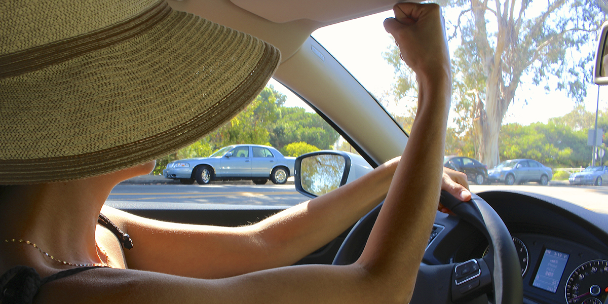

    <main role="article">

      <article>

        <h1 class="text--center"><span>VI.</span> DEFENSIVE DRIVING</h1>

        <hr>

        <h3><span>A.</span> PLANNING TRIPS</h3>

        <h4><span>1.</span> Packing: first aid kit, flashlight, blanket, navigation aid, warm clothing, etc. in vehicle</h4>

        <div class="row">
          <div class="col-md-8 col-md-offset-2">
            
          </div>
        </div>

        <p>Ah, road trips! The right of passage for the American youth. What could be more fun than driving on the open road, wind in hair, classic rock blasting from your speakers? But what could be worse than finding yourself stranded alone on the side of the road at night in the desert with a snake bite, no first aid kit and a dead cell phone? </p>

        <p>Planning ahead for these eventualities is a great way to minimize their effect and safely get back on the road as quickly as possible. Therefore you should always keep an emergency kit in your car. This kit will be your best friend in emergency situations, like flat tires, smoking engines or natural disasters. California is always due for “the big one” so don’t get caught unprepared! These kits are especially important when you’re traveling long distances alone. Taking the time to put a proper emergency kit together is well worth the effort and you’ll never regret having the following items on hand:</p>

        <ul>
          <li>Fully Stocked First Aid Kit and First Aid/CPR Quick Reference Card</li>
          <li>Flashlight with Extra Batteries</li>
          <li>Blankets</li>
          <li>Navigation Aid and/or Maps</li>
          <li>Warm Clothing and Comfortable Shoes</li>
          <li>Cell Phone Charger</li>
          <li>Safety Flares and Waterproof Matches</li>
          <li>Spare Tire, Jack, and Tool Kit</li>
          <li>Bottled Water and Emergency Food Supply, which you can find a plentiful supply of at your local outdoors supply store in the camping section</li>
          <li>Unexpired Fire Extinguisher</li>
          <li>Radio and Extra Batteries</li>
          <li>Toiletries and Any Essential Prescription Medication</li>
        </ul>

        <p>The above list of items would ensure you are well prepared for unfortunate eventualities, but it is not necessarily exhaustive. You can of course add to it whatever items you think you may need should you encounter a natural disaster or should some part of your car fail at an inconvenient time. (Although, is there ever really a convenient time for a breakdown?) </p>

        <h4><span>2.</span> Checking road conditions/construction (heavy congestion, collisions, chains required, etc.)</h4>

        

        <p>Before setting off, it is best to check the traffic and road conditions of your planned route.  Of course, you can use any news or information source of your choosing, and there are many to choose from. This gives you the best chance of avoiding delays and unfavorable or dangerous conditions. </p>

        <p>If you are traveling to an area with snow, make sure to check any local requirements for chains and confirm there are no road closures. Most towns in mountainous areas require chains on your tires above a certain elevation during the snowy seasons. You can find chains available for purchase at most local automotive shops. Ask the salespeople to help you determine the proper type and size of chains and give you pointers on how to attach them to your tires. Make sure you know how to attach the chains to the tires before you set out on your trip.</p>

        <div class="row">
          <div class="col-md-8 col-md-offset-2">
            
          </div>
        </div>

        <p>Many navigation aids these days also have the ability to check for traffic congestion and collisions and will reroute you to a less crowded route. You can also check websites like <a href="www.sigalert.com">www.sigalert.com</a>for congestion and accident information before starting your trip. If you can avoid roads with such delays as accidents, detours and road closures, it would be best to do so - for both you and the community at large. Avoiding such traffic jams can prevent road rage, which we will discuss in much more detail later, or the necessity of making less than advantageous lane changes. You can also prevent the pressure and stress of running late or the temptation to drive above the speed limit on your journey. </p>

        <h4><span>3.</span> Inspect or have someone else inspect your vehicle for safety before taking a long trip</h4>

        

        <p>Part of your pre-trip planning should always include a thorough inspection of your car or vehicle. If you are not experienced with the parts of your car, plan a trip to the mechanic to make sure your car’s oil has been changed and all of the fluids have been topped off for your brakes, steering, radiator, windshield wipers, etc. You or your mechanic should also check your brake pads and tires to make sure they are not over-worn, are free of holes and leaks, and have the amount of air recommended by your vehicle’s owner’s manual. Make sure they have adequate tread for the type of journey you are taking. Double check that there are no signs of holes, nails, or any other embedded objects in the rubber. Make sure your car battery is charged and all of your headlights and brake lights are working. If it has been more than a couple of months since you packed your emergency kit, make sure to double check the batteries in the flashlight and confirm the items in the first aid kit have not expired. Also confirm your water bottles are still full and that your emergency food supply is unexpired.</p>

        <p>Although the mechanic will be an extra expense, it is much better to pay a small amount up front to ensure the safety of yourself, your passengers and any other vehicles, pedestrians and cyclists along your path rather than have your car break down or cause an accident due to some malfunctioning part of your vehicle. Also, your mechanic may spare you the trouble and cost of calling for roadside assistance and paying costly emergency car repair, not to mention possible hotel costs while your car is being tended to, as well as the time lost on your journey. Trust me, if you are not knowledgeable about cars, paying your mechanic to do the check for you is well worth the cost and effort.</p>


        <h4><span>4.</span> Allowing extra travel time</h4>

        <p>If you must reach your destination at a specific time, be sure to allow yourself plenty of extra time for the trip. There are many things that can happen to delay you on your journey, despite the most proactive planning. By giving yourself this extra time, you can avoid the temptation to drive above the posted speed limit, make dangerous maneuvers through traffic or experience road rage. </p>

        <div class="row">
          <div class="col-md-8 col-md-offset-2">
            
          </div>
        </div>

        <h3><span>A.</span> AVOIDING PROBLEMS ON THE ROAD</h3>

        <h4><span>1.</span> Maintaining a safe following distance</h4>
        <h5><span>i. </span> Three second and three second plus rule/Allowing more space behind motorcycles</h5>

        <p>Traffic conditions can change quite unexpectedly and rapidly, so keep watch for variations, particularly on freeways and highways. Look for signals from the drivers around you and prepare for merging traffic where likely, such as near on-ramps and interchanges. Always be alert and watchful for changes in traffic flow and road conditions. Keep as much open space around your vehicle as is feasible by avoiding getting “boxed in” by the cars to your sides and in front of your vehicle. Be aware of which lanes around you are open in case you need to take quick and evasive action to avoid a collision. Avoid driving in other drivers’ blind spots to the best of your ability. If you must drive in another’s blind spot for a time, just keep a vigilant watch on changing traffic conditions and keep an eye out for any signs that the driver in whose blind spot you are driving does not intend to change lanes. </p>

        <p>One of the most effective ways to prevent a collision is to avoid tailgating. If you follow too closely to the car in front of you, you have less time to react to sudden stops or changes in conditions and you often lose a large part of your visibility ahead. The general rule of thumb is to allow 3 seconds between you and the car in front of you. The way to determine this distance is to choose a marker along the road, such as a road sign or post, and once the car ahead of you passes it, begin counting “one-thousand-one, one-thousand-two, one-thousand-three.” Your car should not pass the same marker before you finish counting. If you do, you are following too closely and should add distance between you and the car in front of you. Try to add some space between your car and the vehicle in front of you by lifting your foot off of the accelerator rather than stepping on the brakes. This will allow you to slow down more gradually.</p>

        <p>If you are in bumper-to-bumper traffic at high speeds, as is often typical on freeways in southern California, and can’t get three seconds behind the vehicle in front of you, try to follow far enough behind to give you visibility of the road ahead. If you can’t see beyond the car in front of you, you will not be able to see if the line of cars ahead of you comes to a sudden stop and you are then in danger of rear-ending the car in front of you and potentially even being rear-ended by the vehicle behind you. </p>

        <p>There are certain conditions in which you should allow more than 3 seconds, such as the following:</p>

        

        <ul>
          <li>When you cannot see around the vehicle in front of you, due to its having tinted windows or being an oversized vehicle or truck, and can’t change to a lane with better visibility. If you leave a little additional space between you and the vehicle in front of you, you’ll have a greater chance of seeing around the vehicle ahead of you.</li>
          <li>When there is a tailgater behind your vehicle, adding a couple of additional seconds between your vehicle and the one in front of you will make it less likely that you will get hit from behind if you have to stop suddenly. It is not advisable to brake suddenly under these circumstances because you will often anger the driver behind you or potentially cause him or her to collide with you. If you can’t get 4 or more seconds behind the car in front of you, change lanes to get away from the danger caused by the tailgater. </li>
          <li>When driving on wet, icy or slippery roads. The first 15 minutes after it begins to rain, the roads are the most dangerous, so use particular caution then. This is because the rain mixes with oil from motor vehicles and newer asphalt, resulting in slippery surfaces. Once it has rained long and hard enough, it will wash away the oils and reduce the slippery conditions. So be especially careful when at the first signs of rain.</li>
          <li>When following motorcycles, as a crash with a motorcyclist is much more likely to end in a fatality. Be especially mindful when following motorcycles on any dangerous road conditions, such as slippery roads, gravel, etc., or under any other circumstances that make it more likely the motorcyclist could fall.
          
          </li>
          <li>When the driver behind you indicates he/she wants to pass you. Slow down slightly to allow enough room in front of you for the other drive to safely move in.</li>
          <li>When you are carrying a heavy load in your car, like when you move cross country from Boston to Los Angeles with all of your worldly possessions weighing your car down, or if you are towing a trailer, or packing a ton of gear and friends for a camping weekend. Any of these things (and more!) will make your car stop more slowly - it’s basic physics.</li>
          <li>If you are nearing a railroad crossing and happen to be behind any vehicle that is legally required to stop at the crossings, such as school buses, commuter buses or placarded vehicles. Allow more space between you in advance of the railroad crossing to add a layer of safety.</li>
          <li>When merging onto a freeway, you are often met with oncoming traffic on your left attempting to merge into your lane to exit the freeway. Leave additional space in front of you so that the other drivers have room to merge without you or them having to slam on your brakes. The easiest way to allow more distance in front of you is to temporarily remove your foot from the gas pedal.</li>
        </ul>

        <p>When traveling in our motor vehicles, we are surrounded by others who have a wide variety of reasons for being on or near the road. There are many vehicles on the road for business purposes, such as delivery trucks, or men and women traveling to and from meetings, mail carriers, construction workers, etc... There are people driving to and from social activities, emergency vehicles heading to some disaster, pedestrians paying more attention to their phones than the crosswalk signals, etc... Each person on and around the road has different objectives and motivations and sometimes these various objectives can interfere with their ability to give the necessary amount of attention to drive safely. Although it is each driver’s responsibility to drive safely, we know it is not always the reality that each person is giving their full attention to the road.</p>

        <p>If you are unlucky enough to be on the road with a problem driver or near a problem pedestrian, it is in your best interest to increase your following distance and to allow a larger cushion of space around your car. Such potential dangers include the following:</p>

        <ul>
          <li>Any driver who is unable to see you, due to buildings, objects or other cars</li>
          <li>Drivers backing out of a driveway or parking space</li>
          <li>Drivers who have moved to pass you on a curve or with oncoming traffic ahead</li>
          <li>Vehicles in a neighboring lane who may be forced into your lane due to upcoming lane shifts or due to a pedestrian, bicyclist, obstructions, etc.</li>
          <li>Pedestrians walking with umbrellas blocking their view or with hats pulled below their eyes</li>
          <li>People who are distracted:
            <ul>
              <li>Delivery people jumping on and off of their trucks or carrying their items</li>
              <li>Construction workers</li>
              <li>Children at play</li>
              <li>Pedestrians (or renegade drivers) who are using their cell phones</li>
              <li>Drivers with children, pets, rowdy passengers, or food pulling at their attention</li>
              <li>Lost drivers who are looking at maps or their GPS devices</li>
            </ul>
          </li>
          <li>People who seem confused:
            <ul>
              <li>Tourists at busy or complicated intersections</li>
              <li>Drivers who slow down for no apparent reason and may be looking for a house number or a parking space or street sign</li>
            </ul>
          </li>
        </ul>

        <h4><span>2.</span> Avoid driving in the blind spots of other vehicles</h4>

        <p>You may remember, from dutifully studying your handy CA Driver Handbook at the fresh young age of 16, that a blind spot is any part of the area surrounding a vehicle that is not visible to the operator when at the vehicle controls. This can be very dangerous because the driver may think he or she is safe to back up or change lanes, when in fact there may be another vehicle or pedestrian in the way.</p>

        <p>Each of the mirrors of a vehicle give the driver visibility in the shape of an “A,” with the mirrors themselves representing the top of the “A.”  Anything outside of these three “A” shapes is the area where you are “blind.” In order to compensate for this lack of visibility, a driver can quickly glance over his or her right and left shoulders. This will give the driver visibility of the blind spots created by the angles of the mirror. The glance should be quick, as you must necessarily take your eyes away from the front of your vehicle in order to view the blind spots.</p>

        <p>When preparing to back your vehicle or change lanes, it is imperative that you turn your head to quickly look over your left and right shoulders to view the blind spots first. Take care that you do not inadvertently pull the steering wheel in the direction you glance. Be sure to make a habit of using your turn signals so that the other drivers can warn you if they are driving in your blind spot and you’ve missed seeing them before changing lanes.</p>

        <p>On that note, do not stay in another driver’s blind spot. It is inherently dangerous because they cannot see you. If they are forced to take evasive action due to some impending danger, they may attempt to change lanes without taking the time to check their blind spots. Or they simply may be distracted and neglect to look over their shoulders. Never assume other drivers will practice the best safety measures because that puts your own life at risk.</p>

        <h4><span>3.</span> Planning for an evasive action (e.g., sudden stop ahead or sudden lane change ahead)</h4>

        <p>Driving is a dynamic activity. No two trips will ever be identical, no matter how many times you take that same route. An animal could dart across the road, causing another car to swerve or stop suddenly. A driver could spill coffee on themselves and take their eyes off the road or jerk their steering wheel. A construction zone could have been recently established, changing the flow of traffic or closing a lane. Any or all of these conditions (and more!) could be present at any time, so always position yourself to safely take evasive action.</p>

        <p>One way to do so is to avoid driving directly next to other vehicles when traveling on multi-lane roadways. It is best to leave a cushion of space around your vehicle in case you or someone else needs to quickly change lanes due to changing or dangerous conditions. The other driver may also swerve a bit due to distractions or debris or animals in the road. If you are directly next to that vehicle, you will likely be hit. To the best of your control, drive either in front of or behind the vehicles in the lanes next to you.</p>

        

        <p>To the best of your ability in your current circumstances, make room for vehicles entering freeways, regardless of whose right of way it is. Simply speed up or slow down so they may enter traffic safely. If you drive alongside them at their point of entry, you will cause them to run off the road, collide with your car, or slam on their brakes when their lane finally does end. None of these results are desirable.</p>

        <p>Additionally, when approaching freeway exits, allow a similar space cushion around your car. Often other drivers do not realize their exit has come up and quickly change multiple lanes in order to get to the off-ramp in time. Other times, a car in the exit lane will suddenly swerve back onto the freeway. Always assume someone around you will drive in an unsafe manner and protect yourself from these dangerous drivers by maintaining an adequate cushion of space around your vehicle.</p>
        <p>When driving next to parked cars, allow enough space between your car and the parked cars for a car door to be opened. Often people parking their cars do not think to check for oncoming traffic before opening the car door to exit the vehicle. Although this is not advisable for the driver of the parked car to do and is quite dangerous, you cannot control what others do - you can only prepare for it.</p>

        <h4><span>4.</span> Driving with your headlights on during the day to increase your vehicle’s visibility</h4>

        <p>In general, you are legally required to turn your headlights on 30 minutes after sunset and continue to use them while driving until 30 minutes prior to sunrise. It is also required by law to turn your headlights on any time you need to use your windshield wipers due to unfavorable weather conditions, such as rain, fog, or snow, or in any other conditions which prevent you from seeing at least 1,000 feet ahead.</p>
        <p>However, the law does not limit your use of headlights and there are many other driving situations that could benefit from the increased visibility that comes with using your vehicle’s headlights:</p>

        <ul>
          <li>When frosty conditions are present, inhibiting your visibility or potentially the visibility of the other drivers on the road with you.</li>
          <li>Any time unfavorable conditions such as fog, cloudiness, smoke, dust, exhaust fumes, concrete dust from construction zones, etc., make it difficult for you to see the other drivers on the road and vice versa.</li>
          <li>When driving on small or windy country roads where visibility is difficult.</li>
          <li>When it is important to get the attention of another driver.</li>
        </ul>

        <h4><span>5.</span> Avoiding lane changes near intersections</h4>

        <p>Intersections occur when one roadway crosses another and include such connections involving alleys, side streets, freeway entrances, etc... To drive through an intersection is to participate in one of the most complicated and multidimensional traffic situations a driver will face on the road. Nearly half of all reported crashes occur in intersections, including 21% of all fatalities, according to the Federal Highway Administration. Particular care in approaching these potentially hazardous intersections is therefore highly recommended - for your safety, as well as that of the other drivers, bicyclists, pedestrians, etc., traveling near your vehicle.</p>
        <p>Changing lanes in an intersection is technically legal, however it is extremely dangerous and therefore not recommended. If you can delay your maneuver or complete it in advance of the intersection, you will likely reduce your chances of a collision. When you perform maneuvers that are unexpected to the drivers, bicyclists and pedestrians around you, it is likely you will increase your chances of being in a collision. For example, there may be a vehicle approaching the intersection from the opposite direction waiting to make a left turn across traffic. If you are in the middle lane, the driver making the left turn may begin to edge into your left lane in anticipation of your passing through the intersection in the middle lane. If you were to change from the middle lane to the left lane when near or in that intersection, your two vehicles would likely collide. Or perhaps you are driving in the middle lane and want to switch to the right lane. A car may be turning right against the light, seeing your vehicle in the middle lane before proceeding through, causing you to rear-end his vehicle or at the very least slam on your brakes or swerve. There are a plethora of ways changing lanes in an intersection could be dangerous, so use tremendous care when initiating these maneuvers.</p>
        <p>Do keep in mind that a maneuver made by you which forces another vehicle to change lanes in an intersection would be an illegal act. For example, let’s say there are two lanes that turn left into the left and middle lanes of a 3-lane road. If you are in the far left lane, but drift or intentionally move into the left-turn lane to the right while executing your turn, you will force the driver to your right into the far right lane of the 3-lane road, even though he should have been able to turn into the middle lane. If a car coming from the opposite direction of traffic had been in the process of a right turn into that far right lane, you would have been responsible for causing an unnecessary collision.</p>

        <h4><span>6.</span> Scanning for hazards</h4>

        <p>By being constantly aware of your surroundings and what is happening on the road ahead, you will be better prepared to avoid dangerous situations and hazards. If you constantly look down the middle of the road, you will have a higher chance of falling victim to highway hypnosis, which lulls you into an inattentive, day dreaming, trance-like state. When in this state, you will be less likely to notice avoidable hazards ahead and to your side. This state of mind often happens when driving for long periods of time, particularly on highways. Take frequent breaks to avoid falling asleep in the driver’s seat. If possible, switch driving responsibilities with a companion at each break to ensure each of you is refreshed and awake when in the driver’s seat. If you are driving alone, take longer breaks at rest stops and gas stations. If you being to feel too drowsy or too tired to continue, reserve a room at a hotel for the night or take a nap in your car at a rest stop. These delays are preferable to causing or being involved in an accident!</p>
        <p>Another way to potentially prevent highway hypnosis is by engaging your attention and constantly scanning the entire environment in which you are driving. Be sure to scan the whole scene, not just to avoid highway hypnosis, but also to be a proactive and safe driver. When you look ahead and to your sides, pay attention to telltale signs of problems ahead, such as a swerving car or a vehicle with its hazards on. Also look for signs giving you warnings or directions, such as those alerting you of construction or detours ahead. Stay aware of things that look like they’re about to happen, such as a beloved pet darting into the road or a child chasing a ball that’s rolling toward the street.</p>
        <p>A good rule of thumb is to look 10-15 seconds down the road ahead. On the highway, this translates to roughly a quarter of a mile and in the city it is roughly one block. Also, be sure to check your rearview and side mirrors every two to five seconds to check the position of the vehicles around you. It isn’t necessary to look for extended lengths of time -- just a quick glance will do.</p>
        <p>When in doubt of the best method of keeping watch while driving, think back to your driver’s education class, pull SIPDE out of the moth balls, dust it off and take a good long look at it. To review, the acronym spells out: SCAN, IDENTIFY, PREDICT, DECIDE and EXECUTE. Let’s look at each component in detail.</p>
        <p><strong>SCAN:</strong>  Scan aggressively for potential hazards. Don’t affix your eyes on one object or in one direction. Look ahead, behind you and to each side of your vehicle. Scan the road, the sidewalks, the bike lanes, etc. As mentioned above, a good rate of scanning the road is every 10 to 15 seconds.</p>
        <p><strong>IDENTIFY:</strong>  Identify hazards and potential conflicts in the surrounding area. Keep scanning for other cars, trucks, pedestrians, bicyclists and animals. Check for parked cars, swerving vehicles, wobbly bicycle riders, unruly children and unleashed pets.</p>
        <p><strong>PREDICT:</strong>  Predict what that hazard might do and think of a way out of the situation before it happens. For instance, if you are driving in the right lane of a four-lane road next to parked cars and you see a driver up ahead get into the driver’s seat of a parked vehicle, it is possible that the vehicle may pull into traffic in front of you.</p>
        <p><strong>DECIDE:</strong>  Decide what you need to do based on your prediction of an upcoming event. In our example above, keep an eye out for indications that the parked vehicle may be moving into traffic. If possible, move into the left lane to allow room for the parked vehicle to merge into traffic safely, or slow down to leave space ahead of you.</p>
        <p><strong>EXECUTE:</strong>  Execute your decision. This is where your driving skills come into play. Remember, in order to properly EXECUTE, you must have a plan. Without a plan, your best decision is meaningless. I can decide to become a world famous actor, but if I have no plan to get head shots or find an agent or take acting classes, for example, I will continue watching movies from my couch - not making them.</p>
        <p>There are many situations where you can effectively apply SIPDE, including scanning for:</p>

        <h5><span>i.</span> For parked vehicles moving into traffic </h5>

        <p>When driving along city streets and residential areas, a silent threat is ever-present and often undetected in your periphery: the stealthy parked car. This particular enemy is often particularly dangerous because most of the time it lies silently on the sideline in blurry packs, uninterested in your passing. But then - most unexpectedly - one of them will jump out and try to hit your car! </p>

        <div class="row">
          <div class="col-md-8 col-md-offset-2">
            
          </div>
        </div>

        <p>Beware! Be ever watchful for the parked cars with movement inside of them. This may mean its driver has returned and plans to move the car into your lane. Occasionally one such insider will also open the car door without looking to confirm it is safe, causing you to swerve into oncoming traffic or to hit the door. Never assume the giants are asleep - keep a watchful eye for any sign of their movement. Some indicators are seeing the front wheels turning toward traffic or the red taillights activating, alerting you that the driver has stepped on the brake or started the car. </p>

        <h5><span>ii.</span> At intersections for vehicles taking your right-of-way </h5>

        <p>Also be mindful as you approach intersections, on the lookout for vehicles that may take your right of way. For example, if you are turning left at an intersection with a stop light and you have a green arrow, make sure that cars coming from the opposite direction and turning right on a red light do not take your right of way. Or if you are the first to stop at an intersection with a four-way stop, pause a moment to confirm that the cars coming from other directions who reached the stop signs after you did are in fact planning to give you the right of way. </p>

        <h5><span>iii.</span> Before making lane changes (ahead and blind area) </h5>

        <p>When preparing to change lanes, you have a lot of scanning to do! First, look ahead to confirm conditions are safe. If the lane you are planning to move to has stopped traffic up ahead, it may not be safe to change lanes at that moment. It could be that you will have to slam on your brakes in order to avoid rear ending the car ahead of you in the lane you’ve moved into. Also, the car behind you may need that space cushion that you just moved into in order to decelerate safely in advance of the upcoming traffic blockage. By moving into the lane ahead of them, you could cause them to rear end you. Wait until traffic has slowed down to an appropriate speed to safely navigate the upcoming traffic blockage or until it has cleared and the cars up ahead have resumed their speed limit. </p>
        <p>You also need to check your mirrors to confirm no other cars are at an unsafe distance behind you or near your car in the next lane. Always make sure to check your blind spots by turning your head to the left and right briefly. Also pay attention to the speed the cars behind you are traveling. They may be well enough behind you at the moment you look, but are they traveling fast enough to close the gap before you execute your lane change? Will you put yourself and them in danger by the time you actually move in front of them? If you cause them to slam on their brakes to accommodate you, then you have not estimated your lane change properly. </p>
        <p>If you are on a highway or freeway with three or more lanes, you have another element to consider. If you are in an outside lane, i.e., to the left or right of the middle lanes, you will also need to check the vehicles in the lanes on the other side of the lane you are moving into. If you are both traveling next to each other and are separated by a middle lane, neither of you are able to see the other’s turn signals. Either pull ahead or fall behind that vehicle before moving into your adjoining lane. Otherwise, be sure to keep a watchful eye as you execute your lane change for any indications that the other car is about to move into the same spot you are moving into. </p>

        <h5><span>iv.</span> Covering the brake as you approach an intersection or recognize hazard ahead </h5>

        <p>When approaching an intersection or in advance of a hazard, it is a best practice to take your foot off the gas and cover the brake with it. This means that you do not necessarily step on the brake, but you leave your foot hovering over the brake pedal ready to press it should the need arise. This will also allow your car to slow a bit before entering the intersection or before the hazard, allowing you more time to scan the area and ensure you are safe to proceed.  </p>
        <div class="row">
          <div class="col-md-8 col-md-offset-2">
            
          </div>
        </div>
        <p>Note that there is a difference between covering your brakes and riding your brakes. When you cover your brake, your foot hovers over the pedal to give you a faster reaction time should you need to stop. Riding your brake means pressing the brake pedal for long periods of time. This not only increases the wear and tear on your brake pads, etc., but it also activates your brake lights and gives the drivers behind you the impression that you are stopping. This can be problematic for several reasons. One is that this action may cause the driver behind you to assume there is a hazard he or she cannot see and may react by stopping suddenly. This could cause them to be rear-ended by the car following them or it could cause a bottleneck in the traffic pattern, leading to other drivers changing lanes more frequently and increasing the risk for all the drivers, pedestrians and cyclists in the vicinity. Another reason is that, if they see that you overuse your brakes, they may also stop seeing your brake lights as the alert they were meant to be. You will be like the boy who cried wolf and the drivers behind you may not slow down in reaction to your brake lights when you actually do need to stop suddenly for some upcoming hazard, leading to your being rear-ended. Do not over-use your brakes! In most instances, the slowing action of releasing the gas pedal will slow your car in a similar manner as lightly riding your brakes, only you will eliminate the confusion for the other drivers. </p>

        <h5><span>v.</span> Inattentive driver or erratic driving </h5>
        <p>Another hazard to scan for is the inattentive or erratic driver. Even though it is illegal to use your phone to send text messages while driving, you can’t help but find a handful of drivers who disregard this important law. Watch for these lane-weavers who will crowd you as you drive passed them or drift into others’ lanes. But let’s be honest, they’re not the only ones to watch out for. You may see women applying make-up, men shaving, people changing clothes, eating, attending to their children and/or pets, etc., etc.. And you will also see people smoking legal and illegal substances, or people who have had more alcohol than is appropriate for a driver. Keep watch, use your SIPDE techniques, and always be prepared to take evasive action. If a driver is weaving across lanes, increase your following distance and make sure you have a clear opening to your right or left should you need to remove yourself from harm. Only pass the vehicle if it is safe to do so. If the driver appears inebriated, use your hands-free device to report the situations to the local authorities so they may remove the hazardous vehicle from the road. And it goes without saying - don’t be an erratic driver yourself! Watch the road, delay your texts until you arrive at your destination or can safely pull over, use pet harnesses to secure your animals in the car, make sure the kids have been secured and have enough entertainment to allow you to focus on driving, etc.. When we drive, we not only have our own lives in our hands, but also the lives of all of those traveling in our vicinity. Let’s all take care and avoid unnecessary distractions as much as possible.</p>
        
        <p>Rarely will your journey be limited to only one danger at a time. Driving is a complicated endeavor that requires constant attention and awareness. Often there are multiple potential hazards at any given moment, so it is best to evaluate each and determine the best course of action to prevent any of them coming to fruition. It may even be possible to handle one potential hazard at a time. For example, let’s suppose there is a person riding a bicycle to your right and an oncoming vehicle to your left. The safest way to handle this situation would be to simply slow down and drive with plenty of room behind the cyclist until the car to your left passes. Then you’ll be able to pass the cyclist with plenty of room. If there are dangers or potential hazards on both sides of your vehicle, you may need to position yourself to lessen both dangers. For example, if you are driving in a lane lined with parked cars to the right and there is oncoming traffic to your left, counter the dangers by driving in the middle of both and use your SIPDE skills until you reach safer conditions. If one danger poses more of a threat than the other, allow more space for the greater danger. For example, if there is an erratic driver in the oncoming lane to your left and a parked car on your right, slow down and give more room to the erratic driver. </p>

        <h4><span>7.</span> Enhancing driving with aids</h4>

        <h5><span>i.</span> Use of sunglasses </h5>

        <p>Another way to avoid problems on the road is by using various aids. Sometimes there is simply too much light to allow for adequate vision. Or it could be the time of day when you are driving in the direction of a rising or setting sun and face a strong glare. In cases such as these, consider using sun glasses to diminish the glare. And of course you have sun visors to deploy and decrease the glare, as well.</p>
        <p>One of the best ways to increase visibility and decrease a blinding glare is by keeping your windows and windshield clean. When your windshield is dirty, it can be virtually impossible to see out of it if the sun hits it. This can make driving incredibly dangerous as you cannot see dangers or signs of hazards for seconds at a time. If you should find yourself in this position, be sure to slow down and increase the space around your car. This is an instance where more than 3 seconds of following distance would be appropriate.</p>

        <h5><span>ii.</span> Use of auto designed water repellant on windshield </h5>

        <p>In addition to a clean and clear windshield, there are also water repellants you can use on your windshield to enhance your vision when it rains. Make sure before getting into your car that your windshield wipers are intact and fully functional. Often dry climates can wear them out much more quickly, so be sure to check them regularly even if you are in a climate that doesn’t get much rain.</p>

        <h5><span>iii.</span> Using convex and/or panoramic mirrors </h5>

        <p>Do you remember riding the school bus and those big mirrors on the sides of the bus? Those are driving aides that are also available to you! Consider using convex or panoramic mirrors to add additional visibility.</p>

        <h5><span>iv.</span> Using an audible back-up warning device </h5>

        <p>Consider using an audible back-up noise to alert others when you are backing up. This can help to warn pedestrians, cyclists and other drivers of your intention to back up so they may either clear the way or alert you of their presence. Additionally, most new cars now have a camera set up in the back of the vehicle so that the driver has visibility on screen of the area behind. This is tremendously helpful for drivers when backing up - you now have the ability to see objects behind your car that you previously would not have been visible to you, such as pets, low walls, or small children. Technology will always be ever-evolving and one such example is the collision avoidance system. Many new cars will actually alert the driver that he or she is coming close to other moving vehicles.</p>

        <h4><span>8.</span> Knowing when to give up your right of way</h4>

        <p>Traffic safety is dependent upon common sense, courtesy and right-of-way rules. It is important, and often required for survival, to respect the right-of-way of others, particularly pedestrians, bicyclists and motorcyclists. Always assume that other drivers, pedestrians and cyclists are not guaranteed to respect right-of-way rules and give up your right-of-way when it will prevent a collision. Nobody wins a battle that ends in a crash. It’s simply not worth the hassle, hiked up insurance costs, time your vehicle must spend in the repair shop, rental car expense, and hours spent on the phone with your insurance company, let alone the possibility of death or injury - either yours or theirs - for the simple desire to exercise your right-of-way.</p>
        <div class="row">
          <div class="col-md-8 col-md-offset-2">
            
          </div>
        </div>
        <p>Just to give you an idea of the magnitude of this issue, according to the California Highway Patrol, in 2011 alone, 360 pedestrians died due to their own traffic violation and another 3,885 were injured. Also in 2011, 278 motorcyclists were at fault in accidents that caused their deaths and another 6,012 were at fault in accidents that caused their own injury.<sup>4</sup> So what is our conclusion about right of way rules? When in doubt, give it up. You could quite literally save lives.</p>
        <p>Beyond giving up your right of way when others are in the wrong, it’s also good practice to take precautions to ensure you yourself do not violate traffic laws. Take care to fully stop at stop signs and traffic lights, obey the posted speed limits and other directional signs, avoid illegal turns and unsafe lane changes, etc... Additionally, it is potentially life-saving to aggressively respect the right of way to pedestrians, bicyclists and motorcyclists. According to the California Highway Patrol, approximately 30,000 injuries each year are linked to right of way violations, by either the driver or the pedestrian, so take care in these situations!</p>

        <hr>
        <div class="stat-sources">
          <p><strong>Sources:</strong></p>
          <p><sup>4.</sup> California Highway Patrol <a href="http://www.chp.ca.gov/switrs/pdf/2012-sec7.pdf" target="new">http://www.chp.ca.gov/switrs/pdf/2012-sec7.pdf</a></p>
        </div>

      </article>

    </main>